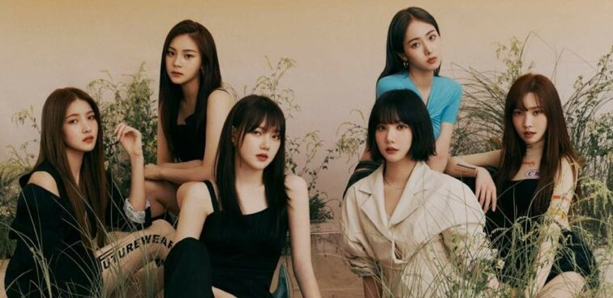

History
GFriend (Hangul: 여자친구, Yeoja Chingu; Chosǒn'gŭl: 녀자친구, Nyǒcha Ch'ingu) adalah sebuah grup vokal perempuan Korea Selatan beranggotakan enam orang yang dibentuk oleh Source Music pada 2015. Mereka membuat debut mereka dengan EP Season of Glass pada 15 Januari 2015. GFriend meraih skor impresif di berbagai tangga musik dan program musik tepat 12 hari semenjak debut mereka. GFriend juga berhasil memenangkan beberapa penghargaan rookie wanita 2015 dan mengumpulkan momentum sejak debut mereka meskipun berasal dari perusahaan kecil
Pada 2016, mereka melanjutkan kesuksesan mereka dengan EP Ketiga, Snowflake dan memenangkan posisi pertama di berbagai music show dengan lagu utama, "Rough". Mereka merilis full album pertama mereka, LOL pada Juli 2016. Pada 2017, GFriend melakukan comeback dengan konsep baru di EP keempat mereka, The Awakening dan pre-order untuk album tersebut melebihi 100.000 unit. GFriend merilis EP kelima mereka, Parallel, pada Agustus 2017, dan EP tersebut dirilis ulang sebulan kemudian dengan judul Rainbow. Pada tahun 2018, GFriend mengadakan konser pertama mereka sejak debut yang disebut Season of GFriend dan kemudian Tur Asia pertama mereka dengan nama yang sama. GFriend merilis EP keenam mereka, Time for the Moon Night, pada April 2018 dan EP special summer yaitu Sunny Summer pada Juli 2018. GFriend melakukan debut resmi Jepang dengan album kompilasi, 今日から私たちは ～GFRIEND 1st BEST～, pada Mei 2018. Pada Januari 2019, GFriend merilis full album kedua mereka, Time For Us. Pada Juli 2019, GFriend merilis album EP ketujuh mereka, Fever Season. Pada Februari 2020, GFriend merilis EP kedelapan mereka, 回: Labyrinth. Pada Juli 2020, grup ini merilis EP kesembilan mereka, 回: Song of the Sirens.
Member GFriend
| NO. | IMAGE | BIODATA |
| 1 |
|
|
| 2 |
|
|
| 3 |  |
|
| 4 |
|
|
| 5 |
|
|
| 6 |
|